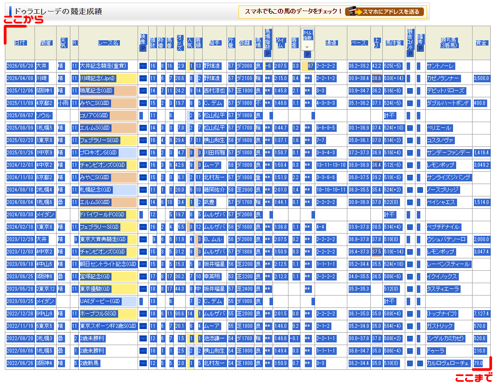

競走馬接点チェッカー
「この2頭こんな接点あったんだ〜」を目的としたサイト。
3頭以上もまとめて比べられます。
特定の馬の過度なage・sageを目的としたツールではありません。論争には使わないでね！！
ガバいですが大目に見てください。
ガバいですが大目に見てください。
使い方
↓すぐ使いたい人はこちら↓
[入力欄へジャンプ]
- netkeibaサイトで、調べたい馬の個別ページを開く。
（PC版・スマホ版どちらにも対応しています。馬ごとに違う版からコピーしても大丈夫です。ブラウザの「デスクトップ版を表示」機能では正常に動作しない場合がありますので、ご注意ください。） - 競走成績の表を、左上端から右下端までドラッグして、表全体が青くなるように選択し、コピーする。スマホ版は、必ず「詳細表示」に切り替えてから選択する。
- 下の入力欄に、馬2頭分のデータを貼る。
- 馬名を入力して、CHECK! を押す。
3頭以上で比べたいときは
「＋ 3頭目を追加する」で何頭でも増やせます。3頭以上にすると、次の機能が使えるようになります。
- 馬の並び替え（↑↓ ボタンか、左端の「⠿」をドラッグ。結果の表の列もこの順番になります）
- ペア別の共通出走回数の表（マスを押すと、その2頭だけの比較に切り替わります）
- 表示する馬や「何頭以上が出走したレースか」の絞り込み
- フォーカス（1頭を選ぶと、その馬と他の馬との対戦歴と先着成績だけを表示します）
※頭数の上限はありません（あまり多いと共有用画像が大きくなりすぎる場合があります）。
コピー範囲の参考画像を見る

※結果の表はPNG（画像）とCSV（表計算ソフト用）で保存できます。
※当サイト側からnetkeibaのデータ取得は行いません。貼り付けたデータはサイト側には保存されません。
※海外馬などの場合、netkeiba上の掲載レース数の違いにより、実際の接点をすべて検出できない場合があります。
入力
※うまく読み取れないときは「コピー元」をPC版／スマホ版に切り替えてお試しください。空欄の馬は無視されます。